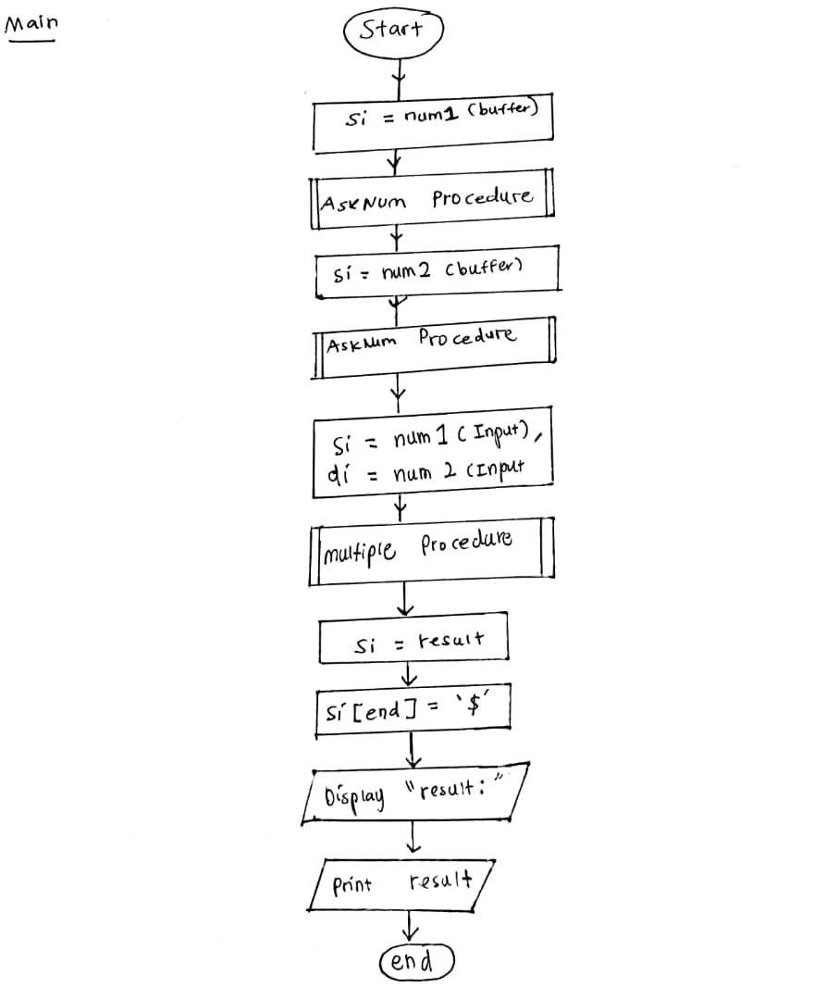
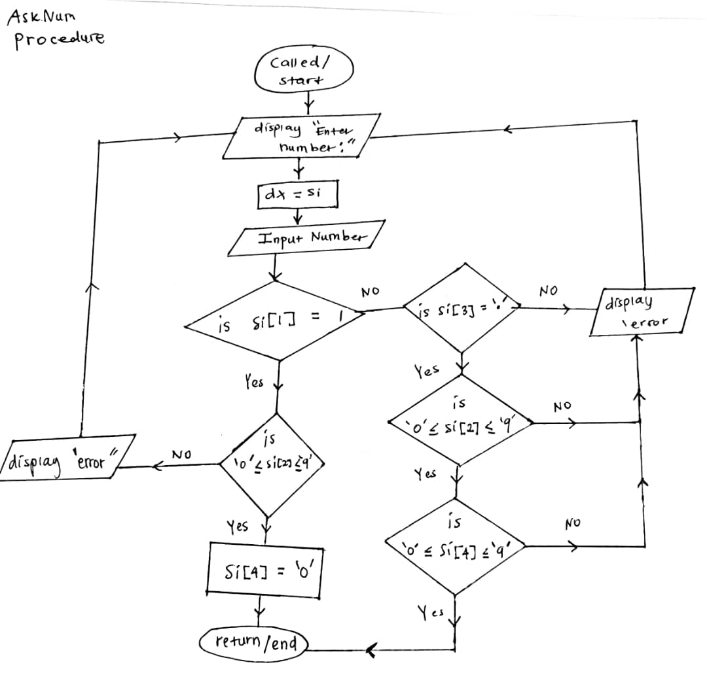

Description
Duration: 3 months
🔢 Project Spotlight: Smart Number Multiplier
In this project, I designed an intuitive and robust number multiplier that gracefully accepts user inputs in neat formats like 1, 1.1, or 0.6. The input validation is sharp — ensuring every input is not just a number, but a positive decimal with a maximum of one digit before and after the decimal point. No messy numbers allowed!
When an invalid number sneaks in, the system promptly alerts with friendly error messages and politely asks for a correct value again — making user experience smooth and mistake-proof.
I harnessed modular programming by crafting two powerful procedures:
- AskNum — Your trusty gatekeeper that handles input collection and validation like a pro.
- Multiple — The math wizard that multiplies your inputs and formats the result in a clean X.X style.
This project sharpened my skills in user input handling, error management, and clean code architecture — all wrapped up in a smooth interactive experience. It's a simple yet elegant demonstration of how precision and user-focus come together in software design!
Key Concepts Used
| Concept | Description |
|---|---|
| TASM + MS-DOS Int 21h | Used for input/output operations |
| ASCII to Decimal Conversion | Input is character-based, so values are converted using sub 30h |
| Fixed-point arithmetic | Used to simulate decimal math by handling digits before and after the dot |
| Procedures (proc) | Detects movement near the hatchery, potentially indicating disturbances. |
| String handling | Careful character-by-character manipulation to build and display output |
FlowChart
Main FlowChart
The program begins by prompting the user to input the first number (num1). At this point, the AskNum procedure is called. This procedure is responsible for receiving the input and validating that the entered value is in the correct decimal format.
Once the first number is confirmed to be valid, the program continues by requesting the second number (num2) from the user. The same AskNum procedure is invoked again to validate this second input.
After both numbers have been successfully entered and validated, the Multiple procedure is called. This procedure performs the multiplication of num1 and num2, and stores the result in a pre-declared variable named result. Finally, the program displays the multiplication result to the user on the screen.
AskNum Procedure
The AskNum procedure is responsible for validating user input to ensure it represent a valid positive decimal number in the format of a single-digit integer or a single-digit decimal (e.g., 1, 0,5, 2.3).
Objective
1. Validate Input Characters: Ensure that all characters in the input are numerical digits or a properly placed decimal points.
2. Restrict Format: Only accept numbers in one of the following formats:
Any Other format, such as multiple-digit integers (22, 10.5) or inputs containing invalid/non-numeric characters (@@, 1.$) will be rejected.
Process Breakdown
1. Prompt User for Input